Projet personnel / 2024 à aujourd'hui (en développement)
Développement web / Design UI
FitGen est une page web personnelle qui génère des tenues aléatoires à partir de mes propres vêtements. Inspiré d'une application vue sur TikTok, ce projet est pensé pour mon usage personnel, avec une touche d'humour grâce à ses visages dessinés à la main.
Crédits
Projet réalisé en solo. Le produit a été finalisé avec l'aide de Claude.
Rôle
Idée, photographie et détourage des vêtements, dessin des croquis, design et programmation.
Usage d'IA
Le design, les photos, les croquis et la première version du code sont de moi. J'ai utilisé Claude pour finaliser le code ainsi que pour structurer et reformuler les textes de cette fiche.
Capture d’écran de l’environnement
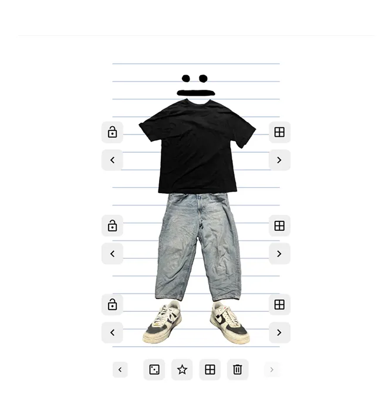
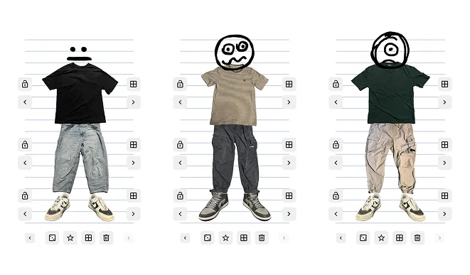
L'idée vient d'une application vue sur TikTok, mais je voulais la recréer avec mes propres vêtements pour qu'elle me serve vraiment au quotidien.
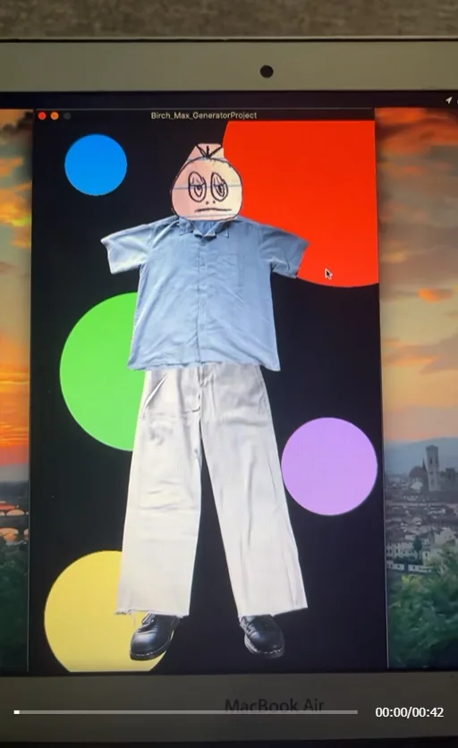
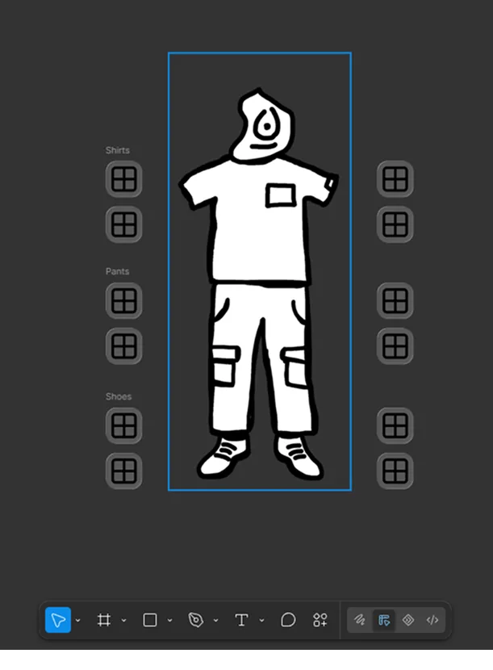
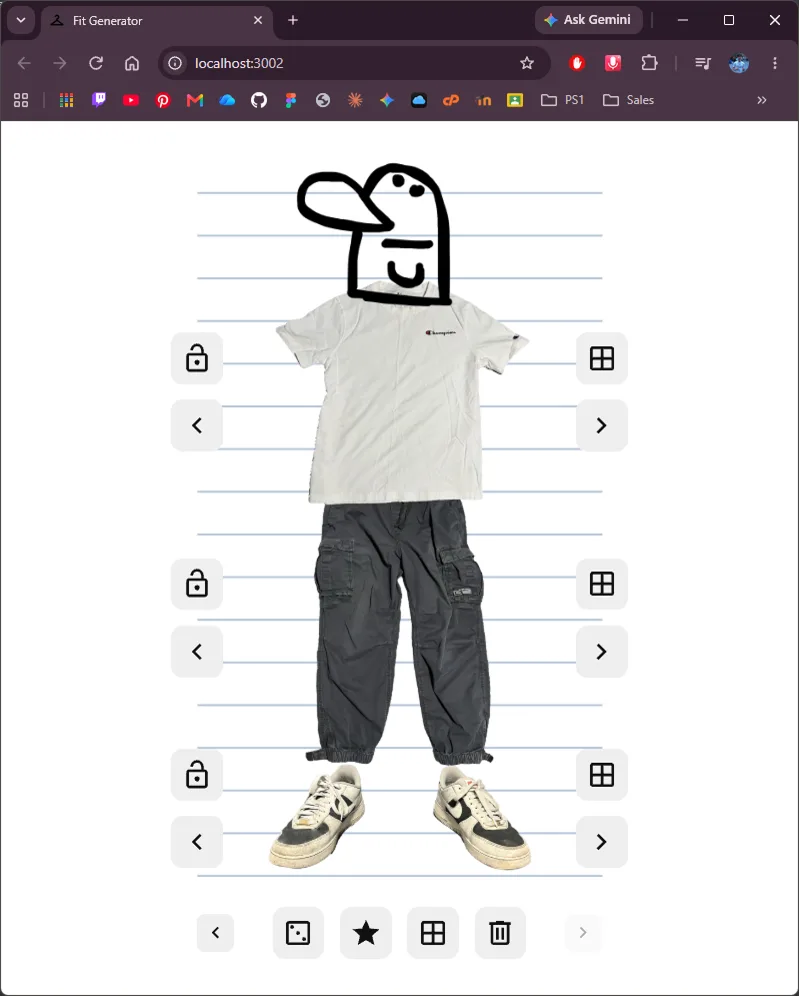
J'ai photographié mes vêtements, puis je les ai détourés dans Photoshop avec un fond transparent. J'en ai préparé plus de 20 chandails, 10 pantalons et 3 paires de souliers.
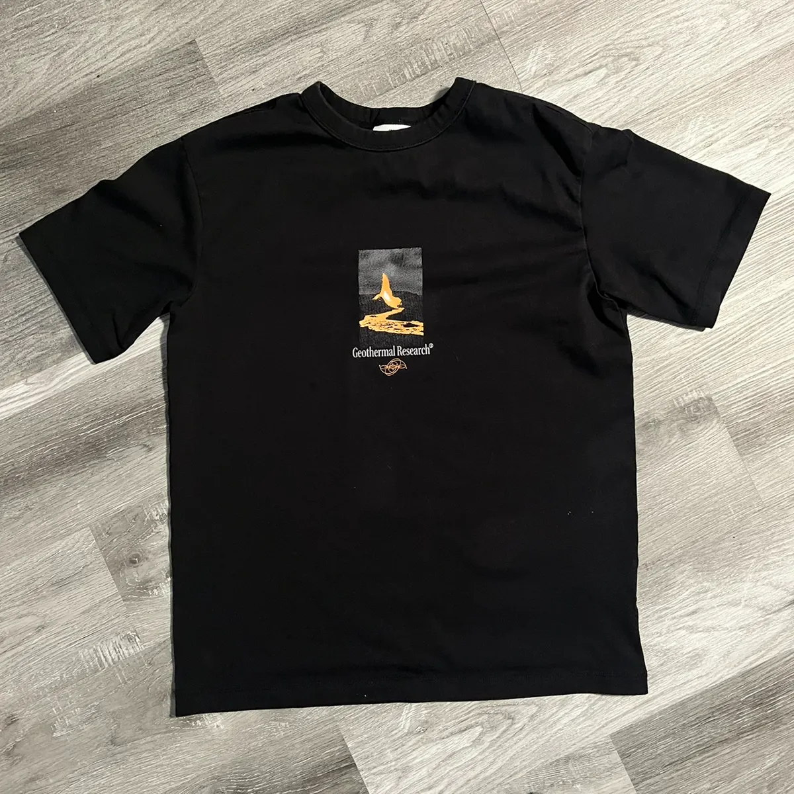
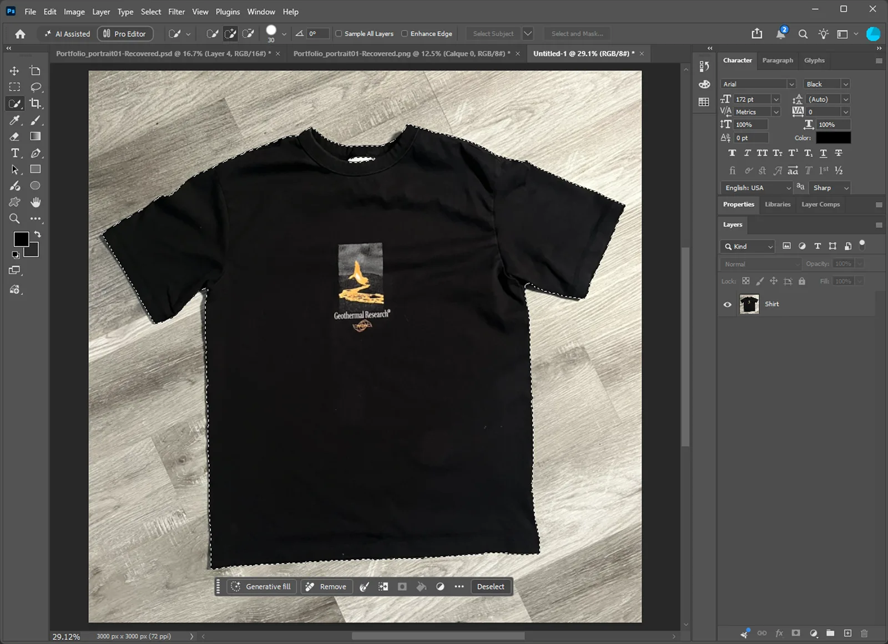
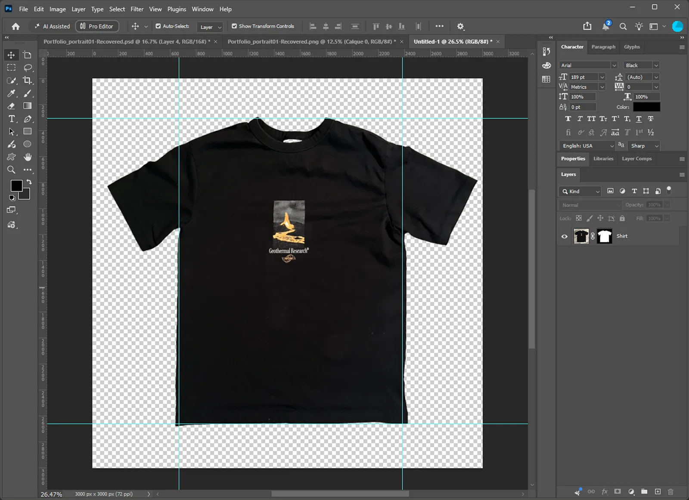
J'ai dessiné dans Paint.NET une silhouette en croquis pour chaque pièce, plus une quinzaine de visages rigolos en noir sur transparent.
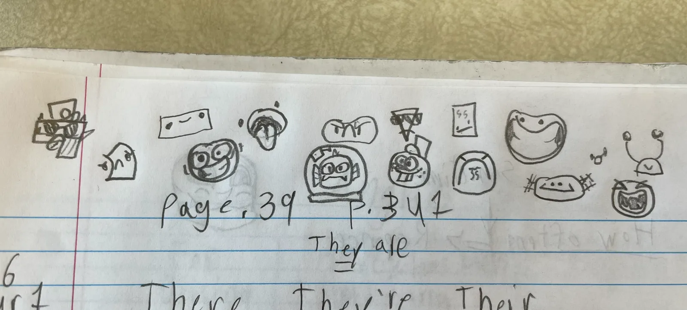
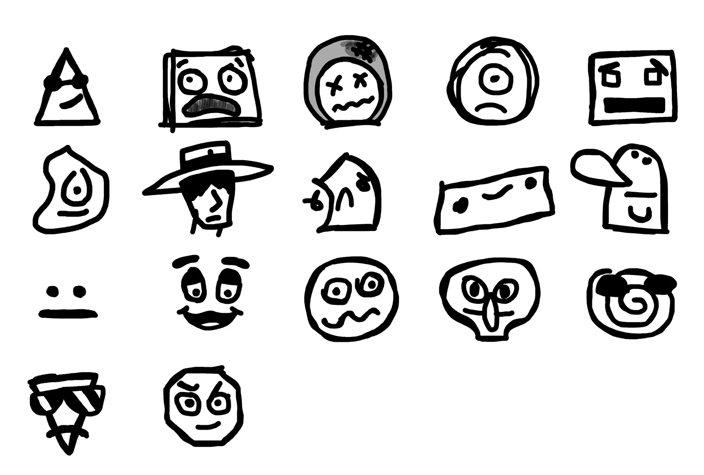
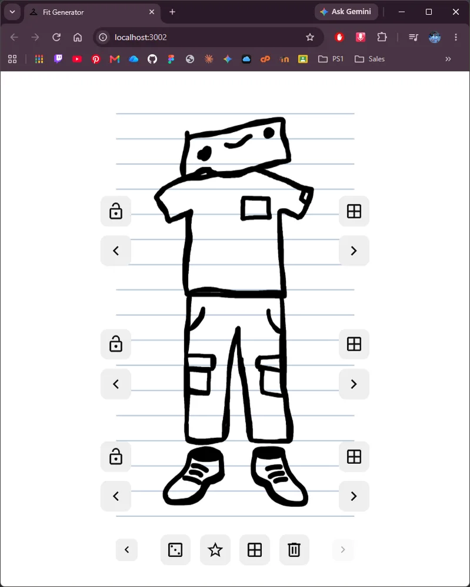
J'ai programmé en JavaScript une randomisation qui change une pièce au clic, ou toute la tenue avec l'icône du dé. Mon premier code était trop compliqué, alors Claude m'a aidé à le finaliser.
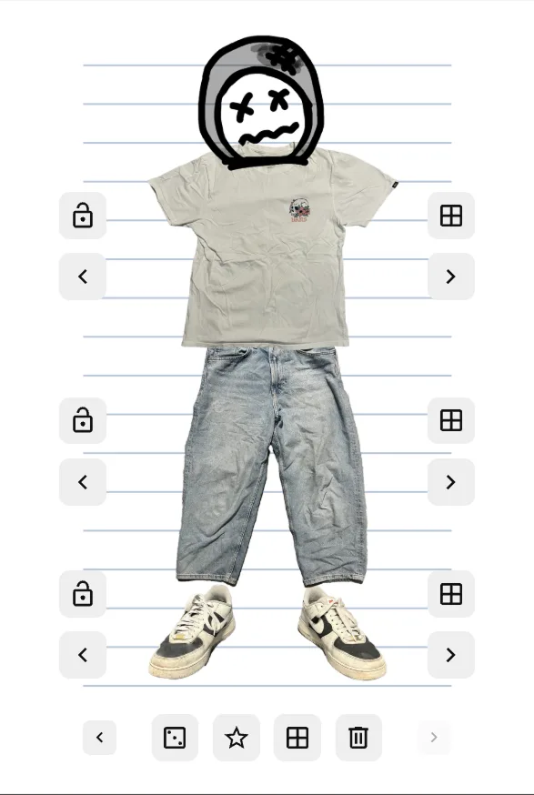
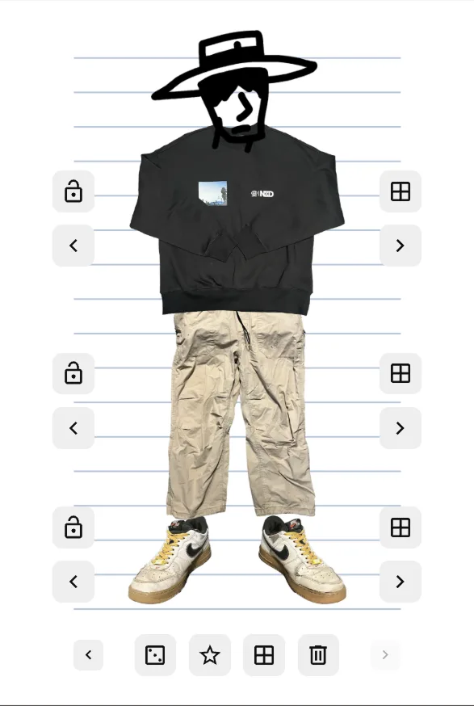
J'ai ajouté des flèches pour parcourir les vêtements, une fenêtre modale pour voir toute une catégorie, et un bouton pour revenir au croquis.
Funny-Face-Black-Tee-Outfit.webp
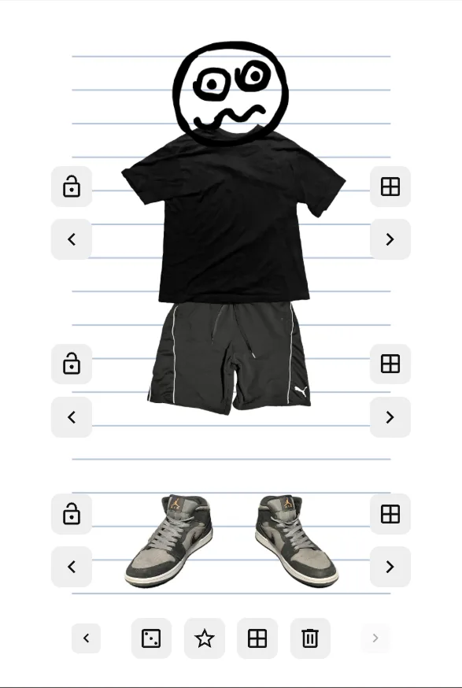
Box-Head-Brown-Tee-Outfit.webp
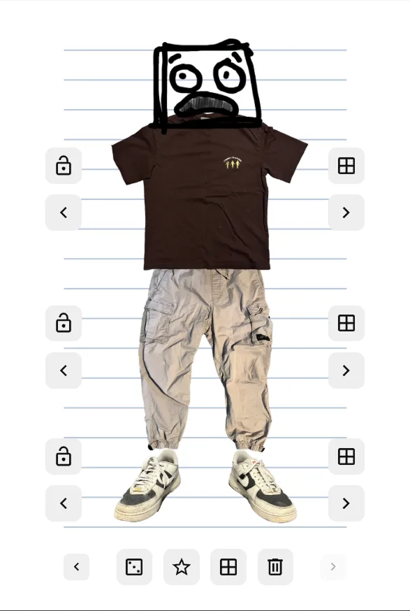
Angry-Face-White-Tee-Outfit.webp
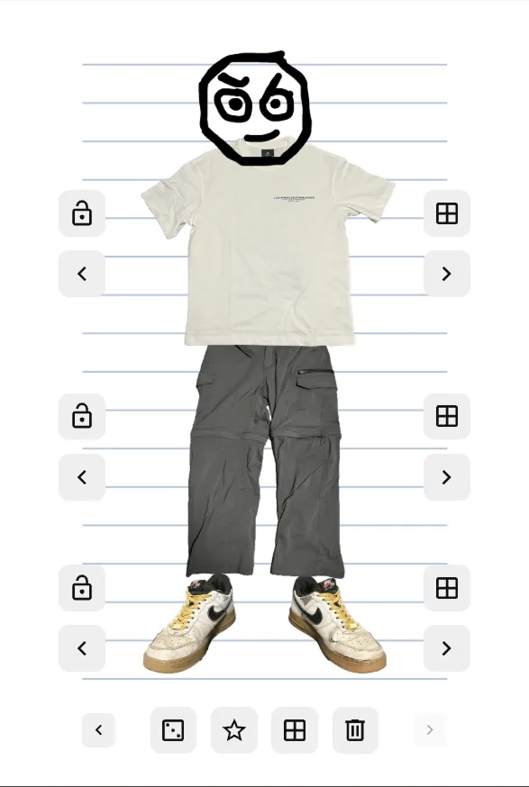
Dizzy-Face-Jeans-Outfit.webp
Cowboy-Hat-Sweater-Outfit.webp
Blob-Head-Purple-Tee-Outfit.webp
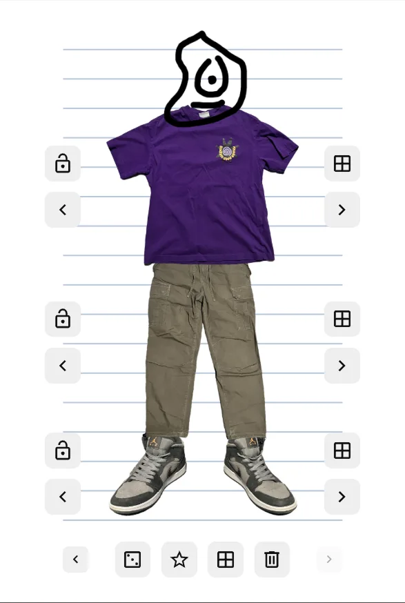
Défis rencontrés
Au départ, je codais comme je le pensais, sans savoir quelle était la bonne façon de structurer mon code. En apprenant les composantes réutilisables dans mes cours, j'ai réalisé que mon site pouvait être beaucoup plus simple à maintenir, et j'ai demandé conseil à mes professeurs de web pour le refaire correctement. Ce projet m'a appris les bases de JavaScript, et comme c'est un projet personnel, il m'a donné la liberté d'explorer ma créativité sans contraintes.
Pour aller plus loin, je pourrais...
Restructurer le code en composantes pour le simplifier, puis permettre d'ajouter ses propres vêtements depuis sa galerie, avec un algorithme qui les détoure automatiquement. Le but final est d'en faire une application sur mon téléphone pour l'utiliser au quotidien. J'aimerais aussi retravailler son style graphique, que je trouve encore simple.